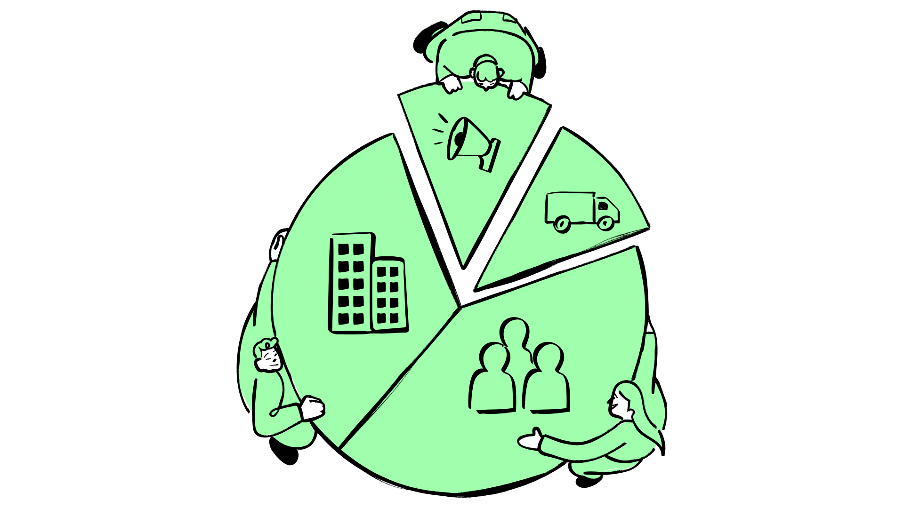
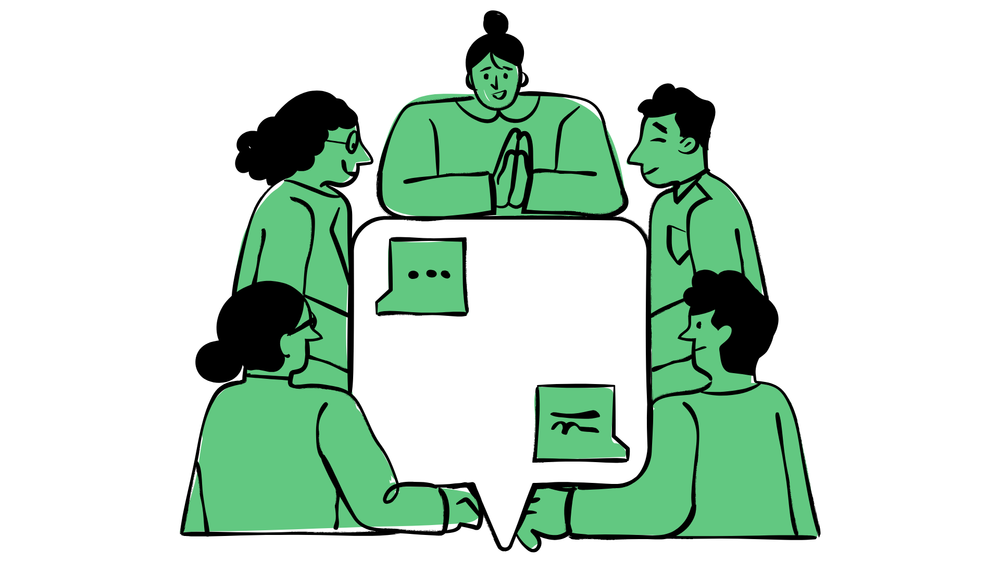
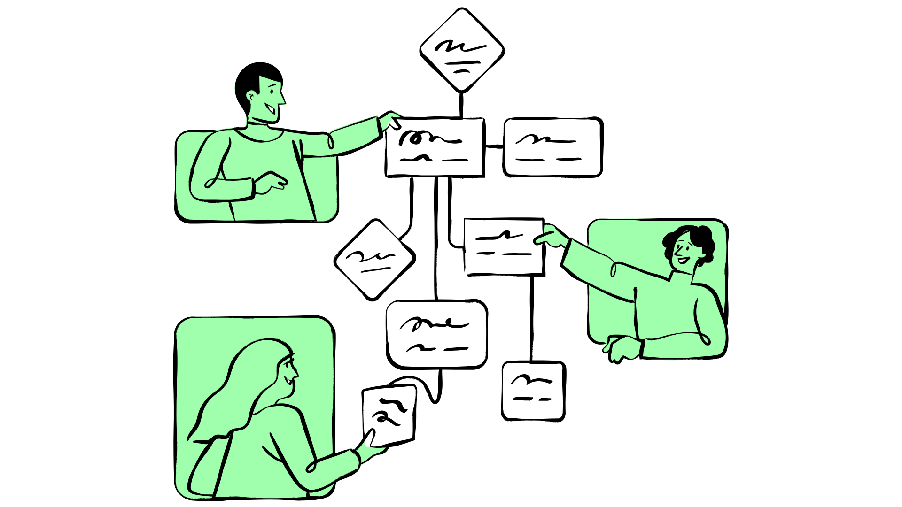

BY @MANGALAM GUPTA | 5 MIN READ | PUBLISHED ON 10.6.2025
Make A Difference (MAD) team believes that real, lasting social change happens when innovation meets purpose. They are working towards creating a future where every child & youth in need of care & protection is able to break the cycle of poverty in a single generation.The MAD working model, creates hyperlocal networks, called Chapters, which are constituted of a Community Organiser (CO), fellows and volunteers. The Community Organiser who is a local leader within that Chapter is responsible for the outcomes of the Chapters such that all operations run smoothly across the year. To do that they build, mentor & guide the Fellow & Volunteer teams in planning, designing & implementing their programs.
The MAD working model, creates hyperlocal networks, called Chapters, which are constituted of a Community Organiser (CO), fellows and volunteers. The Community Organiser who is a local leader within that Chapter is responsible for the outcomes of the Chapters such that all operations run smoothly across the year. To do that they build, mentor & guide the Fellow & Volunteer teams in planning, designing & implementing their programs.
The Reimagination
Now MAD is strategically planning to double their reach and impact every year. To achieve this, each CO has to support
multiple chapters simultaneously without becoming a bottleneck in the functioning of these chapters. This shift requires
rethinking of how time, knowledge and support flow within the organisation.
In the simplest of terms, this comes down to amplifying the agency of all the volunteers, fellows and COs to take action.
How is Apurva enabling this reimagination?
This shift required redefining how the institutional and experiential knowledge are leveraged on one hand and on
the other, how to make it more dynamic, easily accessible, and actionable for all the actors.
MAD decided to introduce Apurva INSIGHTS in this equation. It blends years of organisational insights with the wisdom exchanged in conversations—from city circles, CO huddles, and everyday team interactions—into a living, accessible resource for all. This has enabled teams to work more efficiently and collaboratively, breaking down silos and encouraging cross-learning. Therefore, this decreased reliance on the COs and freed up their capacity to work with multiple chapters simultaneously.
Now, fellows and volunteers have direct access to MAD’s collective wisdom. Innovations and best practices from one chapter are easily accessible to others, fostering shared problem-solving and accelerating solutions. Additionally, insights from usage patterns highlight knowledge gaps, enabling the MAD team to refine existing knowledge and curate new resources based on real-time needs of various chapters.
What are the key shifts?
Fellows and volunteers now have real-time access to knowledge, best practices and community innovations. Decisions can be made quickly, and problem-solving becomes more immediate, empowering teams to take ownership of their work. For example, the time it used to take to plan programs or interventions has dropped from 2 months to 30 minutes now.

Knowledge, institutional insights, processes, and experiences are no longer confined to documents. The continuous flow of experiential knowledge—the kind shared during CO huddles and city circles—enriches the collective wisdom of the organisation. This integration of formal and informal knowledge ensures that learning is constant and collaborative.

For Community Organisers, the shift is even more pronounced. Their role evolves from being day-to-day support systems to becoming strategic guides focused on leadership development. With routine queries and operational tasks streamlined, COs can now oversee up to five chapters—scaling their impact without spreading themselves thin.

Looking Ahead
Scaling impact goes beyond simply expanding reach—it’s about working smarter. By reshaping how the resources and the capacity of the actors are leveraged, MAD can grow its impact wider and deeper, ensuring that every chapter benefits from the emerging collective wisdom at its disposal. This shift not only strengthens MAD’s ability to adapt and respond but also sets a precedent for how social organisations can amplify their collective wisdom to drive lasting change.